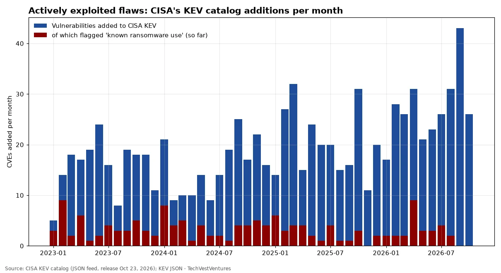
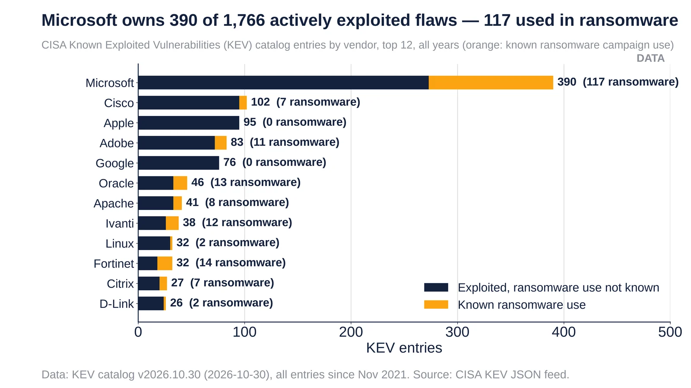
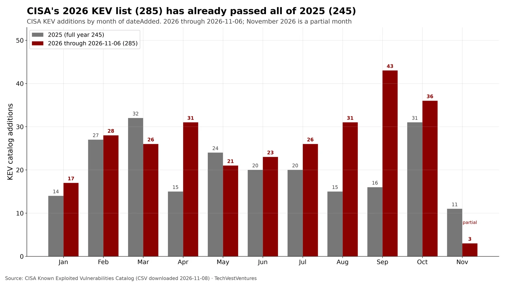

Q1. Exploited Flaws

Every entry in CISA's Known Exploited Vulnerabilities catalog is a flaw attackers are confirmed to be using in the wild. 2026 has already logged 272 additions (to Oct 23) vs 208 by the same date in 2025 and 245 in all of 2025; September 2026's 43 was the busiest month since at least January 2023. October's additions include many internet-facing edge and remote-access products (Fortinet, Palo Alto PAN-OS, Ivanti Connect Secure, Citrix NetScaler, BeyondTrust, Cisco). 2026 leaders: Microsoft 40, Cisco 19, Fortinet 9, Apple 9, Linux 8. The red 'ransomware' share looks low for recent months partly because CISA adds that flag later, after campaigns are attributed.
Sources: CISA KEV catalog (JSON feed, release Oct 23, 2026) KEV JSON

CISA KEV entries by vendor (top 12), with known ransomware use marked; catalog v2026.10.30. Source: CISA KEV feed.
- Oct 30 2026: the catalog has 1,766 confirmed-exploited CVEs, and 361 of them are flagged as used in ransomware campaigns.
- Microsoft has 390 entries (117 ransomware), Cisco 102, Apple 95, Adobe 83 and Google 76. Edge-device vendors (Fortinet, Ivanti, Citrix) have high ransomware shares.
- In 2026 so far, CISA has added 282 CVEs, 40 of them Microsoft. Unlike C1, this chart is a vendor view, not a monthly count.
Sources: CISA Known Exploited Vulnerabilities catalog CISA KEV JSON feed

Additions to CISA’s Known Exploited Vulnerabilities catalog, by calendar month of the dateAdded field in the catalog CSV downloaded on 8 November 2026 (latest addition 2026-11-06). CISA added 285 KEVs in 2026 through 2026-11-06, already more than the 245 added in all of 2025 and well above 2024 (186) and 2023 (187). Comparing the same January–October window, 2026 had 282 additions against 214 in 2025. September 2026 was the busiest month of this year (43 additions), versus 16 in September 2025. November 2026 shows 3 additions through 2026-11-06 (November 2025 finished at 11). The catalog contained 1,769 KEVs in total.
- Annual additions: 2021 311 (catalog launch, includes a historical backlog), 2022 555, 2023 187, 2024 186, 2025 245, 2026 through 2026-11-06 285.
- Among 2026 additions, 27 are tagged knownRansomwareCampaignUse = Known (versus 31 of the 2025 additions). That tag often lags the dateAdded field.
- The newest row on the download is dated 2026-11-06: CVE-2026-19868 (SonicWall).
Note: dateAdded is the day CISA listed the CVE, not the day it was first exploited or the CVE publication date. 2021–22 totals are inflated by the initial backfill of already-exploited bugs when the catalog launched. November 2026 is a partial month (through the download date). This is an update of the monthly KEV view in C1, now comparing 2026 against 2025 rather than plotting a single long monthly series.
Sources: CISA Known Exploited Vulnerabilities Catalog (CSV downloaded 2026-11-08)